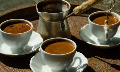

Quality coffe, Quality Caffeine
At Starbuzz Coffee, we are dedicated to filling all your caffeine needs through our quality coffees
and
teas. Sure, we want you to have a great cup of coffee and a great coffee experience as well, but
we're
the only company that actively monitors and optimizes caffeine levels. So stop by and fill your cup,
or
order online with our new Bean Machine online order form, and get that quality Starbuzz coffee that
you
know will meet
your caffeine standards.
OUR HISTORY
"A man, a plan, a coffee bean". Okay, that doesn't make a palindrome, but it resulted in a damn
good cup
of coffee. Starbuzz's CEO is that man, and you already know his
plan: a Starbuzz on every corner.
In only a few years he's executed that plan and today you can enjoy Starbuzz just about
anywhere. And,
of course, the big news this year is that Starbuzz teamed up with Web developers to create
Starbuzz's
Web presence, which is growing rapidly and helping to meet
the caffeine needs of a whole new set of customers.
STARBUZZ COFFEE BEVERAGES
We've got a variety of caffeinated beverages to choose from at Starbuzz, including our House Blend, Mocha Cafe Latte, Cappuchino, and a favorite
of our customers, Chai Tea.
We also offer a variety of coffee beans, whole or ground, for you to take home with you. Order your
coffee today using our online Bean Machine, and take
the Starbuzz
Coffee experience home.
